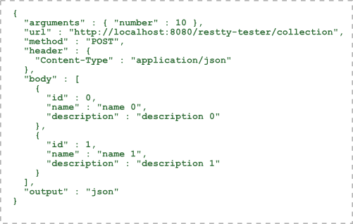
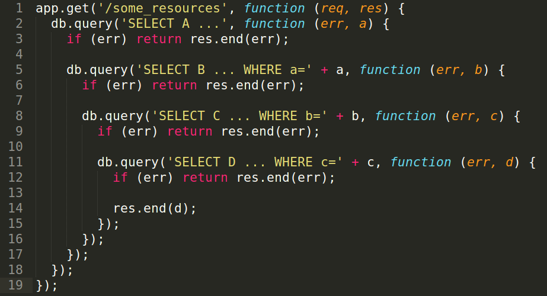

RESTful/Promise/fetch/Webpack Production
REST
表徵性狀態傳輸 (Representational State Transfer)
2000 年就由 Roy Fielding 在博士論文提出
但在 Rails 1.2 實作後才紅起來
是設計風格而不是標準
RESTful
符合 REST 設計風格的 Web API 稱為 RESTful API
資源是由 URI 指定
不 RESTful..
/getDevice
/getDeviceList
/getDevices
/getMyDevice
/getOtherDevice
/updateDeviceList
/addNewDevice
頗難記，重寫一次可能不一樣
到底是 post 還是 get，參數哪裡來？
RESTful
GET /devices
POST /devices/
GET /devices/123
PUT /devices/123
DELETE /devices/123
換一個人寫也一樣
例如 Stackoverflow：
http://stackoverflow.com/questions
http://stackoverflow.com/questions/389169
http://stackoverflow.com/tags
http://stackoverflow.com/users
http://stackoverflow.com/users/3012290
還可以有 query string：
- Filter
- Sorting
- Searching
GET /tickets?q=return&state=open&sort=-prority,created_at
Rails 中的巢狀資源表示法
GET /users/123/devices/2
GET /users/123/posts
CRUD
一致的規則
取得資源清單 -> GET /resources
新增資源 -> POST /resources
取得單一資源 -> GET /resources/:id
修改單一資源 -> PUT /resources/:id
刪除單一資源 -> DELETE /resources/:id
HTML 的表單沒有支援 PUT、DELETE？
一般會加一個 hidden 的 _method input 讓後端 mapping
Rails 就是這樣做的
<form action="url/to/action" method="POST">
<input type="hidden" name="_method" value="PUT">
....
</form>
Accept
用 Accept 跟 Server 溝通格式
接收 純文字 -> Accept: text/plain
接收 HTML -> Accept: text/html
接收 JSON -> Accept: application/json
標準的 Status Code
不同的 Status Code 區段
1xx -> 訊息
2xx -> 成功
3xx -> 重導向
4xx -> 用戶端錯誤
5xx -> 伺服器端錯誤
常見 Status Code
200 OK
--
301 Moved Permanently
302 Found
304 Not Modified
--
400 Bad Request
401 Unauthorized
403 Forbidden
404 Not Found
405 Method Not Allowed
408 Request Timeout
--
500 Internal Server Error
502 Bad Gateway
503 Service Unavailable
504 Gateway Timeout
錯誤的回傳訊息
給充分的資訊
{
"response_code": 400,
"message": "Your input is not allow.",
"code": 1200578,
"error_page": "http://...."
}
不要完全被限制，可以適當的放寬
例如：
/about-us
/user/me
/search
Ajax (Asynchronous JavaScript and XML)
不是瀏覽器自動進行 http request
而是在 JS 的 Code 中進行 http request
雖然叫做 Asynchronous JavaScript and XML...
但現在都用 JSON
XML
JSON
JSON
JSON 跟 JS Object 互相轉換
JSON.stringify({ a: 1, b: '2' });
// => '{"a":1,"b":"2"}'
JSON.parse('{"a":1,"b":"2"}');
// => { a: 1, b: '2' }
XMLHttpRequest
在 IE7 (2006) 年就有的 API
從命名上看出一些怪怪的地方：
而且 API 太過低階
所以不打算教這個
目前還有幾個不錯的 API
可以 run 在 browser、node、react native (ios, android):
因為 fetch 是 WHATWG
(Web Hypertext Application Technology Working Group)
訂出來的標準
所以主要會介紹這個
不過必須先提到 Promise
Promise
像是個狀態機
pending, fulfilled, rejected 三種狀態
Promise 的好處？
有標準的 API 來描述成功失敗
減少深度巢狀的 callback hell
處理掉非同步的部分
讓 stage 3 的 async await 變得可行
這是一個 C# 有的語法
async function foo() {
try {
let data = await getData();
console.log(data);
} catch (err) {
console.log('Oh, no..', err);
}
}Promise 種類
現行有兩種比較盛行的 Promise
ES6 Promise
產生一個 Promise
new Promise(function(resolve, reject) {
});丟進去的 function 會獲得 resolve, reject 兩個 function
Promise 的狀態轉移
new Promise(function(resolve, reject) {
try {
var data = getData(); // 這個必須是 sync 的才 catch 得到
resolve(data);
} catch (err) {
reject(err);
}
});resolve, reject 可以轉換 promise 的狀態
Promise 狀態處理
new Promise(function(resolve, reject) {
try {
var data = getData();
resolve(data);
} catch (err) {
reject(err);
}
})
.then(function handleResolved() {
}, function handleRejected() {
});最重要的一樣是 .then，可以處理 fulfilled 跟 rejected
Promise 狀態處理
new Promise(function(resolve, reject) {
try {
var data = getData();
resolve(data);
} catch (err) {
reject(err);
}
})
.then(function handleResolved() {
})
.catch(function handleRejected() {
});.catch，跟前面是一樣意思
Promise.resolve, Promise.reject
製造馬上會再下一輪事件迴圈被 handle 的 Promise
// 等同 new Promise(resolve => resolve(1));
Promise.resolve(1)
.then(val => console.log(val));
// 等同 new Promise((resolve, reject) => reject(new TypeError('a wrong type')));
Promise.reject(new TypeError('a wrong type'))
.catch(err => console.log(err));
// 等一起完成
var p1 = new Promise(function(resolve, reject) {
setTimeout(resolve, 500, "one");
});
var p2 = new Promise(function(resolve, reject) {
setTimeout(resolve, 100, "two");
});
Promise.all([p1, p2]).then(function(value) {
console.log(value); // Array [ "one", "two" ]
});
// 看誰先完成
var p1 = new Promise(function(resolve, reject) {
setTimeout(resolve, 500, "one");
});
var p2 = new Promise(function(resolve, reject) {
setTimeout(resolve, 100, "two");
});
Promise.race([p1, p2]).then(function(value) {
console.log(value); // "two"
// Both resolve, but p2 is faster
});
練習
fetch
瀏覽器原生支援狀況
在各環境的用法
需要注意一點是環境裡面必須要有可以用的 Promise!
node 0.12 以上的版本有內建
比較舊的瀏覽器都沒有內建
// npm i --save babel-polyfill isomorphic-fetch
// 引用方式 (Webpack + Babel ES2015)
import('babel-polyfill');
import fetch from 'isomorphic-fetch';fetch 的使用
必須用 .then 來等 Promise resolve
fetch('/users.json').then(function(response) {
// fetch 本身會回傳 promise
});
可以取得其他 Metadata
fetch('/users.json').then(function(response) {
console.log(response.headers.get('Content-Type'));
console.log(response.status);
console.log(response.statusText);
});
取得回應文字 .text 又會回傳 Promise
fetch('/users.html')
.then(function(response) {
return response.text();
})
.then(function(body) {
document.body.innerHTML = body;
});
取得回應 JSON .json 又會回傳 Promise
fetch('/users.json')
.then(function(response) {
return response.json();
})
.then(function(json) {
console.log(json);
});
用 POST 送 json 並接收 json
fetch('/users', {
method: 'post',
headers: {
'Accept': 'application/json',
'Content-Type': 'application/json',
},
body: JSON.stringify({
name: 'Hubot',
login: 'hubot',
}),
});
第二個參數是一個 options 物件
練習
Advanced Webpack: Production Build
Plugins
ExtractTextPlugin
// 把 css 抽取到 css 檔
const ExtractTextPlugin = require('extract-text-webpack-plugin');
module.exports = {
module: {
loaders: [
{ test: /\.css$/, loader: ExtractTextPlugin.extract('style-loader', 'css-loader') },
],
},
plugins: [
new ExtractTextPlugin('styles.css', { allChunks: true }),
],
};
webpack.optimize.UglifyJsPlugin
壓縮 js 與 css-loader 的 css
// 壓縮
new webpack.optimize.UglifyJsPlugin({
compress: {
screw_ie8: true, // 不想管 ie8
warnings: false,
},
})
webpack.optimize.OccurenceOrderPlugin
比較常出現的 module 跟 chunk id 用比較短的長度
//
new webpack.optimize.OccurenceOrderPlugin()
Babel Optimize
Resource
Thanks for listening